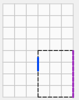

Introduction
Trajectories appear in many settings, including GPS tracking, handwriting, and motion capture. Comparing two trajectories is not as simple as measuring the distance between points at matching times: the same path may be followed at different speeds. The Fréchet distance accounts for this by comparing curves while preserving their order.
Imagine a person and a dog walking along separate curves, connected by a leash. They may change speed, but neither may walk backwards. For each possible traversal, the leash must be long enough to cover the greatest separation between them. The Fréchet distance is the shortest leash length possible over all such traversals.
This project explores how to decide whether two curves can be traversed with a leash no longer than a chosen threshold. It visualizes the free-space diagram, where pairs of points close enough to each other form the free space, and a monotone path through that space represents a valid traversal. The project then illustrates how a divide-and-conquer algorithm processes the diagram in boxes and uses pruning rules to avoid unnecessary work.
The Fréchet Distance
A traversal describes how a person and a dog move along curves π and σ at the same time. They can change speed or pause, but they must keep moving forward from the start of each curve to its end. For any chosen pair of traversals, the leash must be long enough for the greatest separation they reach.
Here, f and g are valid continuous, nondecreasing parameterizations of the two curves. The maximum finds the greatest distance between the walkers during one traversal; the infimum chooses the pair of traversals that makes that greatest distance as small as possible. That smallest possible worst-case separation is the Fréchet distance.
In this project, we also ask the decision version of the question: for a chosen leash length δ, does there exist a traversal whose leash never exceeds δ? The free-space diagram turns that question into a reachability problem.
The Free-Space Diagram
The free-space diagram turns pairs of positions on the curves into points on a grid. Progress along curve P is on the horizontal axis, and progress along curve Q is on the vertical axis. Each cell pairs one segment of P with one segment of Q. A point in a cell is free when the two corresponding curve positions are at most δ apart.
Green shows free space and red shows non-free space for the δ value used in the sketch. A continuous path that moves only right and upward from the lower-left corner to the upper-right corner represents a valid traversal of both curves. Blue marks show reachable boundary intervals; the purple line shows one valid traversal when the endpoint is reachable. Below there is an example of two curves P and Q and their free-space diagram that will be inspected further in chapter 05 and 08.
Curves P and Q
sketch.js.Free-space diagram · δ = 140
The Divide-and-Conquer Algorithm
Fix a leash length δ. The decision problem is to determine whether the start and end of the curves can be connected by a monotone path through free space. The divide-and-conquer algorithm answers this by working on rectangular groups of cells, called boxes, in the free-space diagram.
It starts with the full diagram. For each box, the algorithm receives reachable intervals along its left and bottom edges. These are the entry points a valid traversal can use. It then finds the reachable intervals on the top and right edges, which become inputs to neighboring boxes.
If a box contains more than one cell, the algorithm splits it roughly in half along its longer dimension and recursively processes the two smaller boxes. It passes the first box’s results to the second wherever the boxes meet. When a box contains a single cell, the algorithm uses that cell’s free-space intervals to compute its reachable top and right outputs directly.
Once the boxes at the outer top and right edges have been processed, the algorithm checks whether the shared upper-right endpoint is reachable. If it is, the curves can be traversed with leash length at most δ; otherwise, they cannot. Trying different values of δ can then locate the Fréchet distance.
In the visualizer, a step records a box the recursion processes, along with its inputs, outputs, and any pruning decisions. A step count is therefore a count of recorded box operations, not the number of free-space cells in the whole diagram.
Pruning
Pruning uses information already known about a box to avoid recursively processing parts of it, or to avoid computing an output that is no longer needed. A box’s inputs describe where a traversal can enter; its free space describes where the leash constraint is satisfied. The rules below use those facts to preserve the reachable results needed by the algorithm.
-
Rule I — no reachable inputs. If every interval on both the left and bottom input boundaries is empty, no traversal can enter the box. Its top and right outputs are therefore empty too, so the algorithm can finish that box immediately.
In this example, divide-and-conquer splits the box into B1 and B2. B1’s right output is empty, so the left input of B2 is empty. The bottom input of B2 is also empty in the pictured example. Since both inputs to B2 are empty, Rule I applies and both of B2’s outputs are empty. B2 does not need to be subdivided further.
1. Curves and leash threshold

The example curves define the free space for δ = 87. 2. Reachability in the free-space diagram
Only the lower-left input is reachable; the bottom boundary under B2 has no reachable interval. 3. Divide into B1 and B2
The empty right output of B1 is passed to B2 as its left input. 4. B2 is pruned by Rule I
The dashed outline marks B2 after Rule I: both inputs and both outputs are empty, so the algorithm skips processing its interior. -
Rule II — shrink past an unreachable strip. If the bottom input is empty but the left input contains reachable points, shrink the box to the first reachable coordinate on the left. The symmetric case applies when the left input is empty and the bottom input is reachable. The cut can pass through a cell. Boundary intervals stay indexed by cells, so the partial edge cell is still processed with the exact cut coordinate. The algorithm continues with the smaller box and corresponding inputs.
The sequence below shows the curves, their free-space diagram, and successive box splits. At each shrink, the algorithm drops only the strip that cannot contain a reachable point and continues with the smaller box.
Curves, free space, and box shrinking

Redrawn from the supplied screens. The free-space outline is schematic; blue marks divide-and-conquer intervals and purple marks the path. -
Rule III — determine a simple output boundary directly. If the free intervals on a requested top or right boundary form at most one connected component, the algorithm can sometimes determine that output without subdividing the box further. This is safe when the boundary has no free points; when its first free point is at the start and that corner is reachable; or when the first free point is reachable from an input and the connecting segment through the box stays entirely in free space.
Rule IIIa example: The right boundary contains no free points. Consequently, by Rule IIIa, no traversal can leave the box through this boundary, so its reachable output is empty. This output can be determined immediately without recursively subdividing the box to compute it; another output may still need to be computed separately.

The red dashed edge is the empty right output. Blue marks the inputs to the box. -
Rule IV — skip a redundant outer output. If a box touches the diagram’s right edge and its top output is known, any path through the box to the endpoint must cross that top boundary, so the right output can be skipped. The symmetric case applies to a box touching the top edge: a known right output makes the top output unnecessary. In the diagram, the green top output is known and the purple right output is skipped.

When a rule applies, the visualization marks the affected box and describes why. A pruned part is work the algorithm proves unnecessary for the requested reachability result; it does not mean that the entire free-space diagram has fewer cells. The full diagram still represents the same curve pairs and the same leash threshold.
The Greedy Heuristic
Greedy is a positive filter: it tries to prove that the curves are within δ by constructing a traversal. Starting at (P1, Q1), this project’s basic version considers the next vertex pair after advancing along P, along Q, or along both. It chooses the closest candidate whose distance is at most δ, then repeats.
If the walk reaches (Pn, Qm), it has found a monotone path through free space and can answer “close.” Each move stays in one cell, and the free-space region in a cell is convex, so the straight connection between consecutive free pairs stays free too. The walk takes at most n + m moves.
Greedy never backtracks to try another choice. If it gets stuck because every next vertex pair is farther than δ, it answers “unknown,” not “far”: a different sequence of moves, including one through cell interiors, may still reach the endpoint.
Greedy is separate from the pruning rules. Pruning reduces work inside divide-and-conquer; greedy tries one vertex-to-vertex route. In the current sketch, divide-and-conquer still runs after the filter, so the greedy result does not reduce the recorded D&C steps.
Path Output correctness
Comparing pruning with no pruning
On the curves P and Q shown in the chapter 03 , the divide-and-conquer run records 96 steps with pruning disabled and 20 steps with pruning enabled. That is 76 fewer recorded steps, or about 79% fewer. The curves and leash threshold stay the same; pruning lets the algorithm finish some box outputs early, shrink boxes, or skip an output that is not needed.

These counts are recorded box steps, not elapsed time or the number of free-space cells. The diagram keeps the same cells; pruning reduces how many boxes the algorithm has to process.
Conclusion
The Fréchet distance compares the shapes and order of two curves while allowing them to be traversed at different speeds. For a chosen leash length, the free-space diagram turns the question “can the curves stay this close?” into a reachability problem: a monotone path from the start to the end means yes.
The divide-and-conquer algorithm solves that problem by passing reachable intervals between boxes. Pruning uses those intervals and the structure of free space to skip work when the result can already be determined. Together, the diagrams and box-by-box view make the connection visible between the curves, the mathematical decision, and the algorithm’s computation. Once a monotone path through the free-space diagram has been found, it defines a valid traversal of both curves, providing corresponding parameterizations such that the distance between the two curves never exceeds the threshold δ.